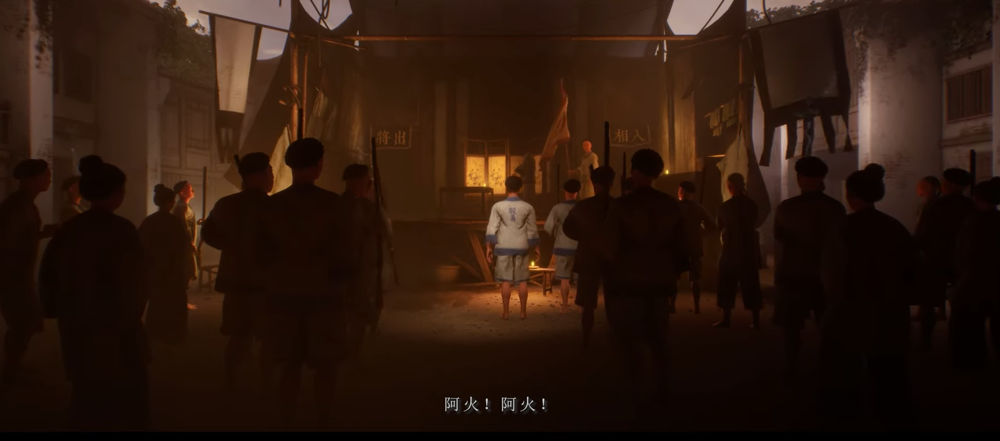
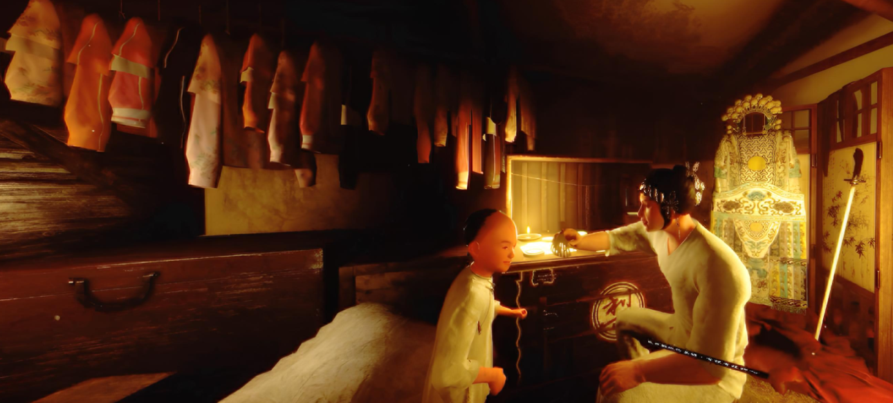
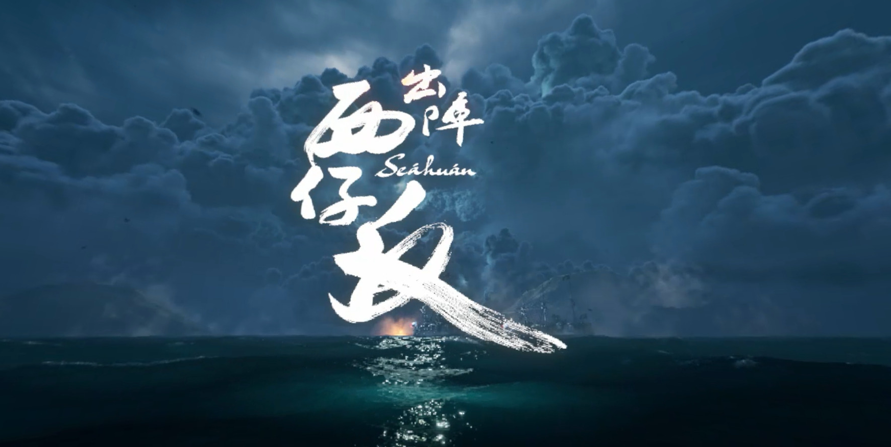
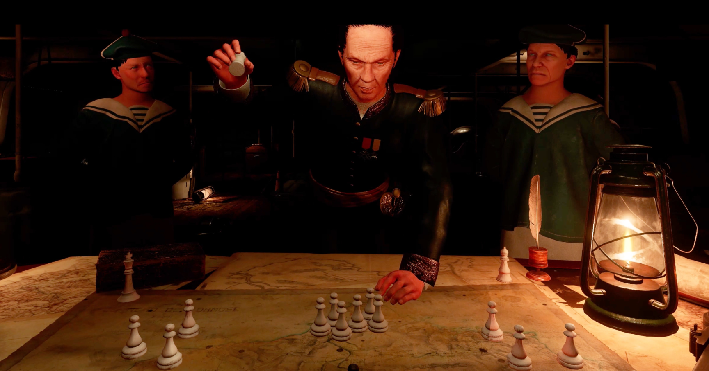
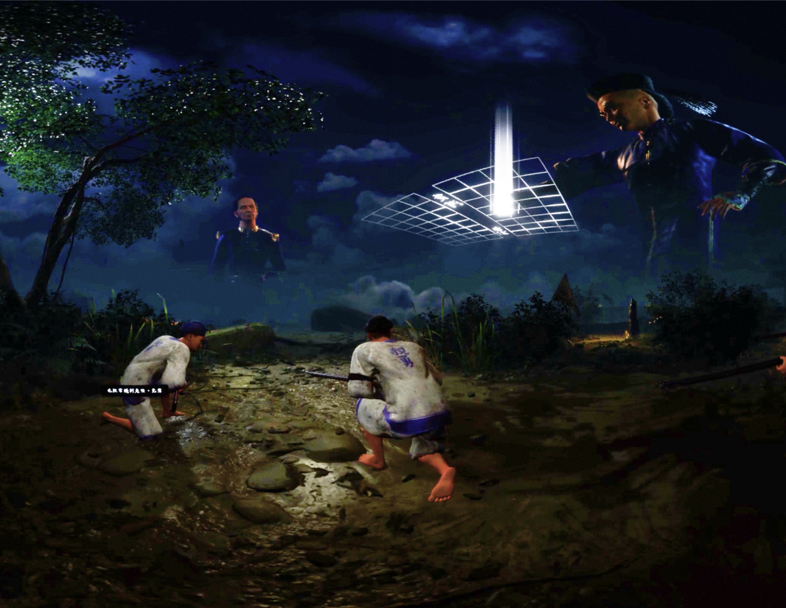
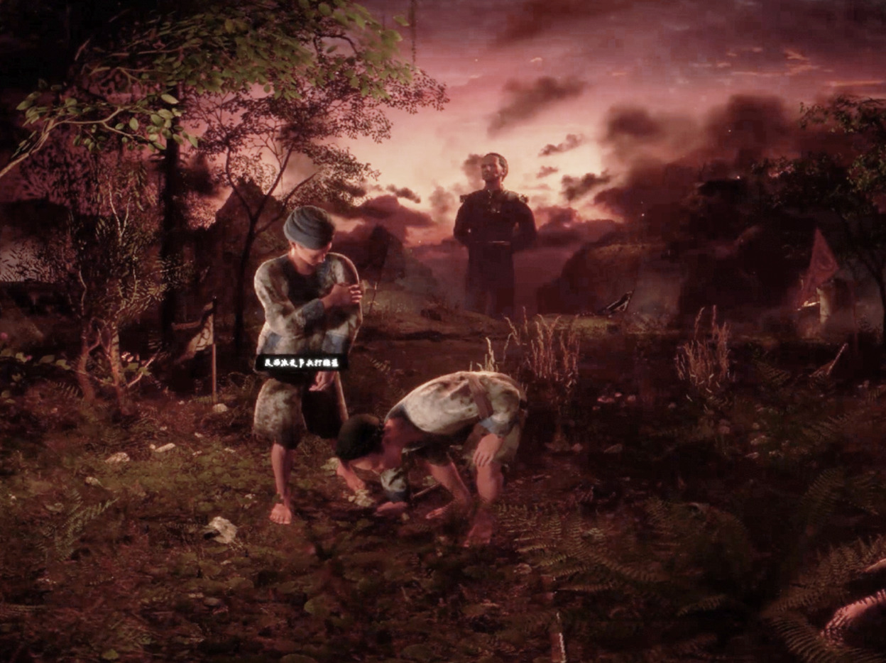

Seáhuán is a cinematic VR short film that follows A-Huea into the Sino-French War, blending volumetric environments, motion capture, and spatial sound to immerse the viewer inside a historical moment.
As Director, I collaborated closely with the writer to develop the story and how it can provide the best experience for the audiences
in an VR environment, a lot of the effort was done to focus the camera placement and movements to gives the viewers comfortable experience while experience the brutality
of the war (example would be a fly through of the battlefield), I also supervised and directed the motion capture of all the actors in the shots on site and in post-production.
There are many limitations in a production environment as each of the segments of performance is constraint by the capture area and the performance needs to cater to the best view angle of the audiences.
As Art Director, I produced the concepts from the final version of the script and worked in Unreal Engine for the project's pipeline production to maintain a consitent style, supervised all the lighting, asset quality, and the final look of every frame. I also worked with third scene completely to serve as the anchor shot for
the short film.

This frame represents the tonal anchor for Seáhuán — establishing atmospheric depth, lighting direction, and character scale within the environment. Here I focus on how the composition leads the eye, and how color and value frameworks support the emotional beats of the story.

The motion capture of this shot was challenging as a full grown adult was playing as the character of the kid in this scene. The height difference was trouble some during the capture and a lot of fixes were done in the post. Also cloth and hair simulation were given to the character in Unreal engine for more details for the performances.

The opening shot, which was aimed to create a raging sea to imply the coming storm and approaching war in the following story. It was done using fluid sim to gives a beautiful and convincing sky and ocean to serve as a backdrop for the title logo. I felt this shot was important as it sets the mood in a subtle way so the audiance can get a hint of what's going to happen.

A shot that the french war general discussing his strategies with his subordinates. It was a difficult shot during production and has gone through multiple iteration that surrounded how we can make this interesting. As talking about the war effect could be 'boring'.

A shot in the battlefield that shows the the entire beach front where the conflict first happened. It was a challenge to design the whole set as the viewer (camera) can not move as fast or far as we would like (for comfort).

A beautiful shot that shows our two protagonists' exchange of their hardship and friendship. It is a setup for whats about to happen next to gives a strong contrast of the aftermath of the war.
Role: Director, Art Director
Type: VR Short Film
Year: 2024
Studio: Moonshine Studio
Tools & Tech: Unreal Engine, motion capture, cinematic tools
{kind=link}